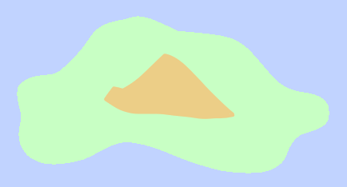
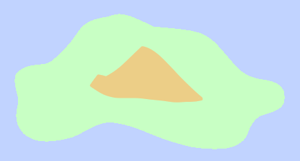

Dragonmaw
The central volcano of Dragonmaw is known as Mount Vereña. There have been no large eruptions in recent history, though the volcano does have many frequent smaller eruptions.
Because of all the volcanic activity on Dragonmaw, the region has some of the most nutrient rich soil in all of Karvaea. This has made dragonin soil a commodity throughout other regions, although it is also illegal to transport without a permit. This has not stopped the soil from becoming highly traded in black markets.
Close